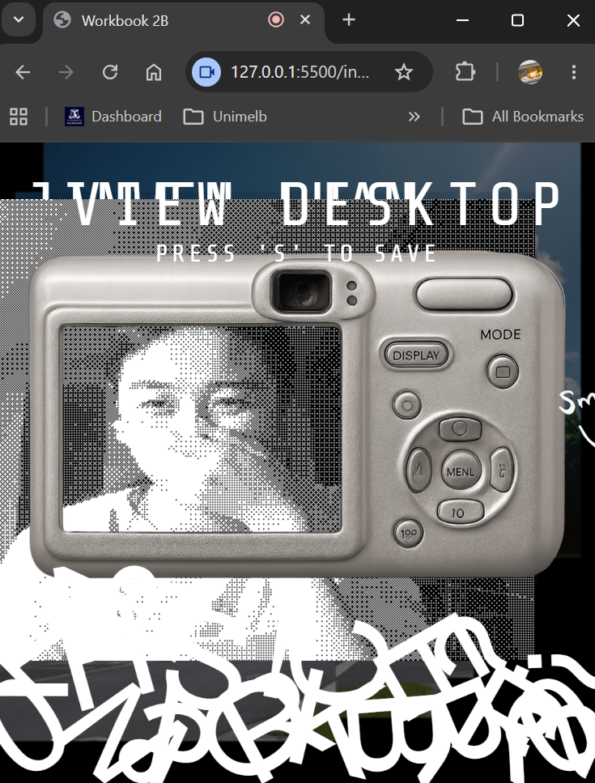

Final Project Pitch
// FRAME NOTES
In week 9's tutorial, we went through everyone's different ideas and proposals for our final project. My project will aim to explore how changes in real life can impact digital interfaces to create a unique experience, or in short, i want to create a game where players can rearrange paintings in real life to manipulate digital terrain in a game. As a bonus, I want to try motion tracking so players can controll their characters with hand gestures. More details can be found in the embedded PDF above.
Workbook Development: Reflection
// CONTACT SHEET

▶ DEVELOP
Overall, I am pretty happy with how I have incorporated interactive features into my Workbook. A feedback I had received in my previous submission was that my image files were too big and hence slow to load on new devices. This time, I hence reduced the image sizes and ensured all files were under 1 MB (except for the embeded pdf file). If I had more time, I would have liked to explore more ways into how I could have added more interactive features in my individual weeks pages, as I feel they are currently quite lacking and do not currently follow my intended aesthetic very well. I would also additionally have liked to make my workbook more responsive for different screen sizes and devices (e.g. mobile).